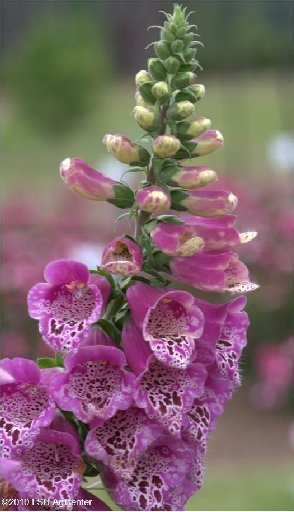

Home
Midwest
Foxglove

FACTS
Leaves and seeds are very poisonous if consumed. Plant contains digitoxin, which is a heart stimulant. Symptoms are nausea, vomiting, and dizziness
SAFETY
First aid is to have the victim vomit